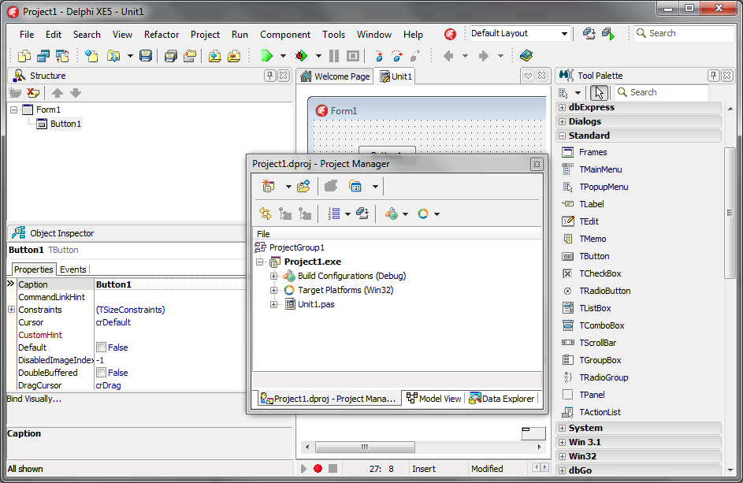
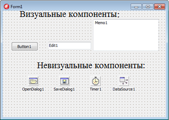
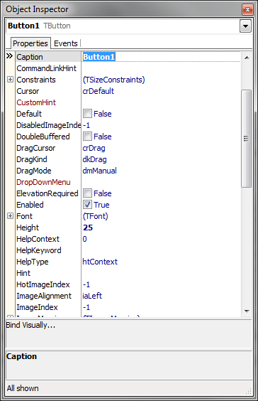
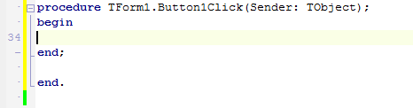
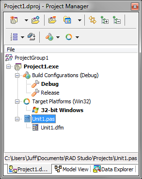
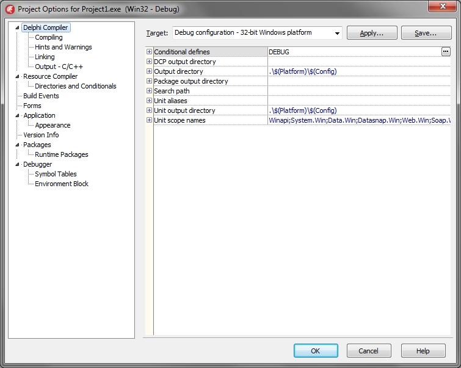

| Тема 2. Интегрированная среда разработки Embarcadero Delphi. | ||
| Назад | ||
|
Среда разработки Embarcadero Delphi представляет собой SDI–приложение, главное окно которого содержит настраиваемую инструментальную панель и палитру компонентов. Помимо этого, по умолчанию при запуске Embarcadero Delphi появляются окно инспектора объектов и форма нового приложения. Под окном формы приложения находится окно редактора кода.
 Рисунок 1 – Среда разработки Embarcadero Delphi Формы являются основой приложений Embarcadero Delphi. Создание пользовательского интерфейса приложения заключается в добавлении в окно формы элементов объектов Embarcadero Delphi, называемых компонентами. Компоненты Embarcadero Delphi располагаются на палитре компонентов, выполненной в виде многостраничного блокнота (рис. 1). Важная особенность C Embarcadero Delphi состоит в том, что он позволяет создавать собственные компоненты и настраивать палитру компонентов, а также создавать различные версии палитры компонентов для разных проектов. Компоненты Embarcadero Delphi разделяются на видимые (визуальные) и невидимые (невизуальные). Визуальные компоненты появляются во время выполнения точно так же, как и во время проектирования. Примерами являются кнопки и редактируемые поля. Невизуальные компоненты появляются во время проектирования как пиктограммы на форме (см. рис. 2). Они никогда не видны во время выполнения, но обладают определенной функциональностью (например, обеспечивают доступ к данным, вызывают стандартные диалоги Windows и др.). Для добавления компонента в форму можно выбрать мышью нужный компонент в палитре и щелкнуть левой клавишей мыши в нужном месте проектируемой формы. Компонент появится на форме, и далее его можно перемещать, менять размеры и другие характеристики.
 Рисунок 2 – Пример использования видимых и невидимых компонентов
Каждый компонент Embarcadero Delphi имеет три разновидности характеристик: свойства, события и методы. Если выбрать компонент из палитры и добавить его к форме, инспектор объектов автоматически покажет свойства и события, которые могут быть использованы с этим компонентом (см. рис. 3). В верхней части инспектора объектов имеется выпадающий список, позволяющий выбирать нужный объект из имеющихся на форме.
 Рисунок 3 – Инспектор объектов
Свойства компонентов являются атрибутами компонента, определяющими его внешний вид и поведение. Многие свойства компонента в колонке свойств имеют значение, устанавливаемое по умолчанию (например, высота кнопок). Свойства компонента отображаются на странице свойств (Properties). Инспектор объектов отображает опубликованные (published) свойства компонентов. Помимо published-свойств, компоненты могут и чаще всего имеют общие (public), опубликованные свойства, которые доступны только во время выполнения приложения. Инспектор объектов используется для установки свойств во время проектирования. Список свойств располагается на странице свойств инспектора объектов. Можно определить свойства во время проектирования или написать код для видоизменения свойств компонента во время выполнения приложения. При определении свойств компонента во время проектирования нужно выбрать компонент на форме, открыть страницу свойств в инспекторе объектов, выбрать определяемое свойство и изменить его с помощью редактора свойств (это может быть простое поле для ввода текста или числа, выпадающий список, раскрывающийся список, диалоговая панель Страница событий (Events) инспектора объектов показывает список событий, распознаваемых компонентом (программирование для операционных систем с графическим пользовательским интерфейсом, в частности, для Windows 95 или Windows NT пре полагает описание реакции приложения на те или иные события, а сама операционная система занимается постоянным опросом компьютера с целью выявления наступления какого–либо события). Каждый компонент имеет свой собственный набор обработчиков событий. В Embarcadero Delphi следует писать функции, называемые обработчиками событий, и связывать события с этими функциями. Создавая обработчик того или иного события, вы поручаете программе выполнить написанную функцию, если это событие произойдет. Для того чтобы добавить обработчик событий (рис. 4), нужно выбрать на форме с помощью мыши компонент, которому необходим обработчик событий, затем открыть страницу событий инспектора объектов и дважды щелкнуть левой клавишей мыши на колонке значений рядом с событием, чтобы заставить Embarcadero Delphi сгенерировать прототип обработчика событий и показать его в редакторе кода. При этом автоматически генерируется текст пустой функции, и редактор открывается в том месте, где следует вводить код. Курсор позиционируется внутри программного блока между ключевыми словами begin и end. Далее нужно ввести код, который должен выполняться при наступлении события. Обработчик событий может иметь параметры, которые указываются после имени функции в круглых скобках.
 Рисунок 4 – Прототип обработчика событий
Метод является функцией, которая связана с компонентом, и которая объявляется как часть объекта.
 Рисунок 5 – Менеджер проектов
Менеджер проектов. Файлы, образующие приложение – формы и модули – собраны в проект. Менеджер проектов показывает списки файлов и модулей приложения и позволяет осуществлять навигацию между ними (рис. 5). Можно вызвать менеджер проектов, выбрав пункт меню View/Project Manager. По умолчанию вновь созданный проект получает имя Project1.dpr. По умолчанию проект первоначально содержит файлы для одной формы и исходного кода одного модуля. Однако большинство проектов содержат несколько форм и модулей. Чтобы добавить модуль или форму к проекту, нужно щелкнуть правой кнопкой мыши и выбрать пункт New Form из контекстного меню. Можно также добавлять существующие формы и модули к проекту, используя кнопку Add контекстного меню менеджера проектов и выбирая модуль или форму, которую нужно добавить. Формы и модули можно удалить в любой момент в течение разработки проекта. Однако, из–за того, что форма связаны всегда с модулем, нельзя удалить одно без удаления другого, за исключением случая, когда модуль не имеет связи с формой. Удалить модуль из проекта можно, используя кнопку Remove менеджера проектов.
 Рисунок 6 – Установка опций проекта
Если выбрать кнопку Options в менеджере проектов, откроется диалоговая панель опций проекта (рис. 6), в которой можно выбрать главную форму приложения, определить, какие формы будут создаваться динамически, каковы параметры компиляции модулей и компоновки. Важным элементом среды разработки Embarcadero Delphi является контекстное меню, появляющееся при нажатии клавиш ctrl+space и предлагающее быстрый доступ к наиболее часто используемым командам. Разумеется, Embarcadero Delphi обладает встроенной системой контекстно–зависимой помощи, доступной для любого элемента интерфейса и являющейся обширным источником справочной информации о Embarcadero Delphi . 25 августа 2008 года компания Embarcadero, новый хозяин CodeGear, опубликовала пресс-релиз на Delphi for Win32 2009. Версия привнесла множество нововведений в язык, как то: - по умолчанию полная поддержка Юникода во всех частях языка, VCL и RTL; замена обращений ко всем функциям Windows API на юникодные аналоги (то есть MessageBox вызывает MessageBoxW, а не MessageBoxA);
|
||
| Конспект подготовлен Бакулиным А. М. 2022 год. | ||